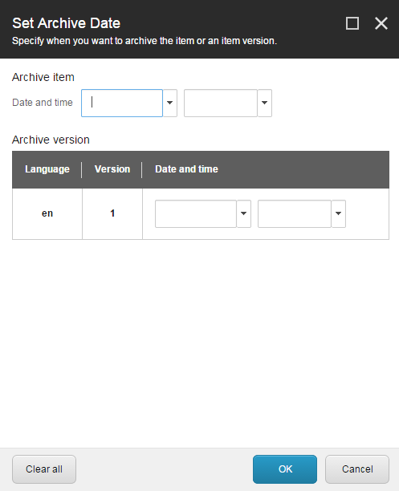

アーカイブしてアイテムを復元する¶
ウェブサイトに表示したくないアイテムは、コンテンツ エディターでアーカイブすることができます。アイテムをアーカイブすると、削除されるのではなく、コンテンツ ツリーの外に保存されます。アーカイブされたアイテムはいつでも復元できます。
アイテムをすぐにアーカイブする¶
アイテムをアーカイブするには
コンテンツ エディタのコンテンツ ツリーで、アーカイブするアイテムに移動します。
アイテムのバージョンをアーカイブする場合は、[バージョン] ボタンをクリックして、関連するバージョンを選択します。
特定の言語でアイテムをアーカイブする場合は、[言語] ボタンをクリックして、該当する言語を選択します。
アイテムをすぐにアーカイブするには、[レビュー] タブの [スケジュール] グループで [アーカイブ] をクリックします。
すべてのサブアイテムを含むすべてのバージョンと言語でアイテムをアーカイブするには、[今すぐアーカイブする] をクリックします。
アイテムの現在のバージョンと言語をアーカイブするには、[バージョンを今すぐアーカイブ] をクリックします。

OKをクリックします。
注釈
アイテムをアーカイブすると、コンテンツツリーからは削除されますが、リパブリッシュするまでは公開されたウェブサイト上に残ります。そのため、変更した内容を自分のウェブサイトに複製するには、ウェブサイトをリパブリッシュする必要があります。
リンク切れを扱う¶
アーカイブするアイテムへのリンクがある場合は、リンクの解除ダイアログボックスが開きます。

すべてのリンクに適用するオプションを選択することができます。必要であれば、リンクを個別に処理してから、残りのリンクに1つのオプションを適用することができます。
ブレーキング リンクを処理するには
リンク切れのリストを開くには、リンク切れダイアログ ボックスで [リンクの編集] をクリックします。
各リンクに対して、以下の操作を行うことができます。
リンクを含むアイテムを編集します。
リンクの削除
他のアイテムへのリンク
注釈
リンクを個別に処理しない場合は、まとめて処理するためにリストに残っています。
[他のアイテムへのリンク] を選択した場合、コンテンツ ツリーで、代わりにリンクするアイテムをクリックします。リンクを更新するには、[OK] をクリックします。
[リンクの編集] ダイアログ ボックスで、[閉じる] をクリックします。
[リンクの破棄] ダイアログ ボックスで、以下のオプションのいずれかを選択して、残っているリンクに適用します。
リンクを削除 - このページに存在するすべてのリンクを削除します。
別のアイテムへのリンク - このページへのすべてのリンクを別のアイテムへのリンクに変更します。
リンクを残す - このページに壊れたリンクを残します。後日、アイテムを復元した場合、リンクは復元されます。
続行をクリックしてください。
後日、アイテムをアーカイブする¶
アイテムのアーカイブを別の日にスケジュールするには、次の手順に従います。
コンテンツ エディタのコンテンツ ツリーで、アーカイブするアイテムに移動します。
アイテムのバージョンをアーカイブする場合は、[バージョン] ボタンをクリックして、関連するバージョンを選択します。
特定の言語でアイテムをアーカイブする場合は、[言語] ボタンをクリックして、該当する言語を選択します。
[レビュー] タブの [スケジュール] グループで [アーカイブ] をクリックし、[アーカイブの日付を設定] をクリックします。
{kind=link}
アーカイブの日付の設定 ダイアログ ボックスで、アイテムをアーカイブする日時を指定します。

アーカイブ アイテム セクションでは、すべてのバージョンとサブアイテムを含むアイテムをアーカイブする日時を指定します。
アーカイブのバージョン セクションでは、現在のアイテムの特定のバージョンをアーカイブする場合に指定します。
{kind=link}
日時を指定するときは、覚えておきましょう。
日付のみを指定した場合、アイテムはその日の真夜中の 12:00 にアーカイブされます。
時間のみを指定した場合、アイテムは現在の日付のその時間にアーカイブされます。
過去の日付または時間を指定した場合、そのアイテムは、次に Sitecore がアーカイブするアイテムをチェックしたときにアーカイブされます。
OKをクリックして変更を保存します。
変更を有効にするには、ウェブサイトをリパブリッシュします。
アーカイブの日付が過ぎると、そのアイテムはマスターデータベースとウェブデータベースにアーカイブされ、コンテンツツリーから削除されます。
注釈
インデックスからアイテムを削除するには、アイテムがアーカイブされた後、再度ウェブサイトをリパブリッシュする必要があります。
アーカイブされたアイテムを復元する¶
アーカイブからアイテムを復元することができます。復元できるのは、自分でアーカイブしたアイテムか、管理者権限を持っている場合のみです。
アーカイブからコンテンツアイテムを復元するには、以下の手順に従います。
Sitecore デスクトップで、[Sitecore Start]をクリックし、[Sitecore Start]アイコン 、[All Applications]をクリックし、[Archive]をクリックします。
アーカイブダイアログボックスで、復元したいアイテムを選択します。
サブアイテムを含むアイテムのすべてのバージョンと言語をリストアするには、リストからアイテムを選択します。一度に復元できるのは、1 つのアイテムのみです。